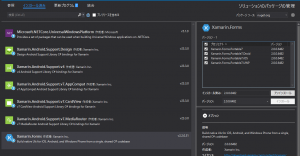
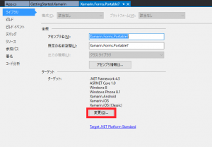
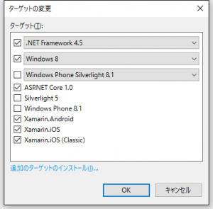
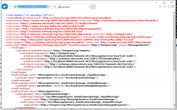
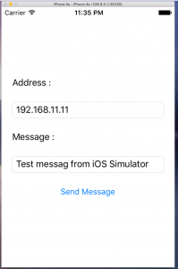
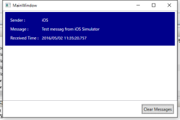
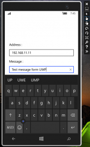
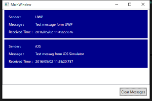

前回はXamarin Android Playerをインストールしました。
Problem
モバイルであっても、利用する場所が野外であるとは限らなくて、社内や自宅などのLANであることも多々あります。
そのような、利用者が不特定多数ではない、利用者数が予測しやすい規模のWebサービスの場合、大規模なサーバーどころか、小さなクライアントサーバー型アプリでサーバー側を非サーバーOS上に構築したサーバーアプリで賄うこともあるでしょう。
そういうシチュエーションならWCFは簡単に構築できますし、うってつけです。
でも、XamarinでWCFがどうするのでしょうか？特にPCLの制約などで面倒な感じがします。
そのあたりのことが下記のドキュメントにまとめられています。
しかし、この記事は、PCLは使っておらず、iOS、Androidのプロジェクトに対してWCFのクライアントを追加しています。
これではコードの共通化の意味がありません。
なので、これを解決します。
今回のソースです。
Resolution
下準備
まず、いつものように、XamarinのBlankアプリをPCLで作成します。
その後、Windows 8.1、Windows Phone 8.1向けのプロジェクトを除去します。
今回、PCLにWCFクライアントを実装する場合、Windows Phone 8.1は使えません。
次に、ソリューションのNugetパッケージの管理を開き、Xamarin.Formsを全てのプロジェクトからアンインストールします。

Xamarin.Formsのアンインストール
{kind=link}
場合によっては、再起動を求められますので、ここで再起動します。
続いて、PCLのプロジェクトのプロパティから、ライブラリのタブのターゲットを設定する個所から変更ボタンを押下します。

ターゲットの変更
{kind=link}
そして、ターゲットの変更ダイアログからWindows Phone 8.1のチェックを外します。

Windows Phone 8.1は外す
{kind=link}
Windows 8をWindows 10にしても変更できないのでそのままでOKです。
最後に、再びソリューションのNugetパッケージの管理を開き、Xamarin.Formsを全てのプロジェクトにインストールします。
場合によっては、また再起動を求められますので、ここで再起動します。
WCFサービスの追加
特にWCFサービスの制限はないです。
ここでは、Xamarin.WcfというWPFプロジェクトを追加します。
また、WCFとDataContractを使用するために、System.Runtime.SerializationとSystem.ServiceModelを参照に追加します。
さらに、MVVMのために、NugetでPrism.Wpf、Prism.Mvvm、Prism.Unityを追加しています。
下記に、サービスの定義とconfigを記載します。
MessageService.cs
1 | using System; |
App.config
1 | <?xml version="1.0" encoding="utf-8" ?> |
他にViewを定義していますが、ここでは重要ではないので無視します。詳しくはソースを参照してください。
WCFサービスのProxyクラスの生成
前項で作成したWCFサービスを実行します。実行する際、管理者権限で実行しないと例外を投げて落ちます。
無事に実行し、Webブラウザから http://localhost:8080/Xamarin.Wcf/MessageService/mex にアクセスします。
無事にアクセスできれば、下記のようにwsdlの定義が表示されるはずです。

WSDLの公開
{kind=link}
表示を確認後、コマンドプロンプトを起動します。
カレントディレクトリはどこでも良いですが、ファイルが2つ出力されるので、わかりやすい場所に移動してください。
移動後、下記のコマンドを実行します。
"C:\Program Files (x86)\Microsoft SDKs\Silverlight\v5.0\Tools\SlSvcUtil.exe" http://localhost:8080/Xamarin.Wcf/MessageService/mex
実行が成功すれば、カレントディレクトリにMessageService.csとServiceReferences.ClientConfigが出力されます。
生成後、csファイルをPCLプロジェクトに追加します。ClientConfigは無くてもよいです。
ここで注意ですが、生成する際に使用するプログラムは、SvcUtil.exeではなく、SlSvcUtil.exeを使ってください。
SvcUtil.exeでも生成には成功しますが、生成されるクラス群にSystem.Runtime.Serialization.IExtensibleDataObject等が使用されますが、このクラスは、PCLでWindows Phone 8.1が含まれていると使用できません。
そのため、最初の下準備でWindows Phone 8.1を除外したわけです。
Service Clientを呼び出す
残念ながら、configファイルを配置して、自動的にBindingを行うようなことはできません。
ですので、コードからBindingを行います。
下記はService Client生成処理の抜粋ですが、意図はつかめると思います。
1 | private void UpdateServiceClient() |
IPAddressだけは、外部から設定できるようにしてあります。
これによって、各端末で設定として保存した値をもとにクライアントを構築できます。
応用すれば、ポート番号、タイムアウト値等も可変にできます。
最後に、WCFの呼び出し処理の抜粋です。
1 | public ICommand SendCommand |
非常にシンプルです。
ServiceManager.Senderは各プロジェクトのスタートアップコードでiOS、Android、UWPという文字列を設定して、それを参照しているだけです。
つまり、どの端末からメッセージが飛んできたのかを判断するためだけの識別です。
テスト
では、実際にテストしてみましょう。
注意ですが、WCFサービスアプリを起動する端末のポート8080は解放しておいてください。面倒ならファイアーウォールを一時的に無効にしてもよいです。
iOS

メッセージ送信
{kind=link}

メッセージ受信
{kind=link}
Android
{kind=link}
メッセージ送信
{kind=link}
メッセージ受信
UWP

メッセージ送信
{kind=link}

メッセージ受信
{kind=link}
Conclusion
非常に簡単にクライアントサーバー型のアプリが完成しました。
一度プロジェクトを作っておけば、今後はこれをベースに拡張できそうです。
Source Code
https://github.com/takuya-takeuchi/Demo/tree/master/Xamarin/Xamarin.Forms.Portable7